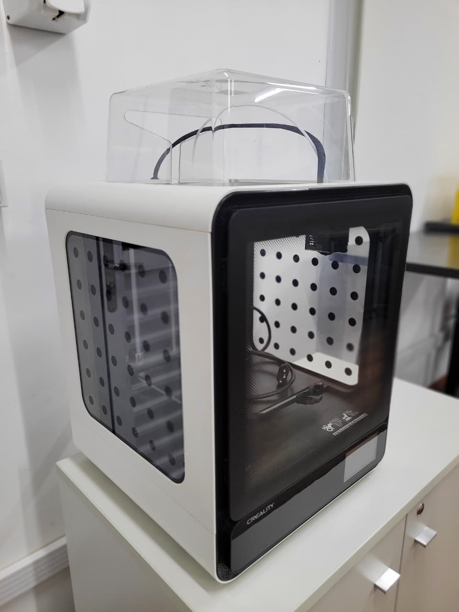

Impressora 3D Creality K1 OPERACIONAL
Categoria: Impressora 3D de tecnologia FDM para fabricação de protótipos e modelos tridimensionaisIdentificação Patrimonial
| Código Interno | IMP3D001 |
|---|---|
| Endereço Físico | ARMB2 |
| Fornecedor | Creality |
1. Descrição e Finalidade
A Creality K1 é uma impressora 3D de tecnologia FDM (Fused Deposition Modeling) destinada à fabricação de objetos tridimensionais a partir de modelos digitais. O equipamento realiza a deposição sucessiva de material termoplástico, permitindo a produção de protótipos, modelos, peças funcionais e componentes personalizados. No Laboratório de Logística, o equipamento pode ser empregado em atividades práticas relacionadas à prototipagem, desenvolvimento de produtos, modelagem tridimensional, processos de fabricação, automação e desenvolvimento de soluções aplicadas à logística e à engenharia.

2. Especificações Técnicas
| Marca / Modelo | Creality / K1 |
|---|---|
| Tipo | Impressora 3D de tecnologia FDM (Fused Deposition Modeling) |
| Tecnologia de impressão | FDM, com sistema de movimentação CoreXY |
| Volume de impressão | 220 × 220 × 250 mm |
| Velocidade máxima de impressão | Até 600 mm/s |
| Aceleração máxima | Até 20.000 mm/s² |
| Precisão de impressão | 100 ± 0,1 mm |
| Altura de camada | 0,1 a 0,35 mm |
| Diâmetro do filamento | 1,75 mm |
| Diâmetro do bico | 0,4 mm |
| Temperatura máxima do bico | 300 °C |
| Temperatura máxima da mesa | 100 °C |
| Extrusora | Extrusora de acionamento direto com engrenagem dupla |
| Nivelamento | Autonivelamento automático |
| Superfície de impressão | Plataforma de construção flexível |
| Filamentos compatíveis | PLA, PETG, PET, TPU, PA, ABS, ASA, PC, PLA-CF e PA-CF |
| Interface | Tela colorida sensível ao toque de 4,3" |
| Conectividade | USB e Wi-Fi |
| Transferência de arquivos | Unidade USB, rede local (LAN) e Creality Cloud |
| Formato de impressão | G-code |
| Software de fatiamento | Creality Print, com compatibilidade com Cura, PrusaSlicer e Simplify3D |
| Recursos de operação | Recuperação após perda de energia, detecção de falta de filamento e ajuste de vibração (Input Shaping) |
| Alimentação elétrica | 100–120 V / 200–240 V, 50/60 Hz |
| Potência nominal | 350 W |
| Dimensões do equipamento | Aproximadamente 355 × 355 × 355 mm |
3. Guia Rápido de Operação
Checklist pré-uso:
- Verificar se o cabo de alimentação está devidamente conectado e a tensão adequada;
- Garantir que a mesa de impressão (plataforma flexível) esteja limpa e livre de resíduos de impressões anteriores;
- Verificar a quantidade e o tipo de filamento no carretel (PLA, PETG, etc.);
- Conferir se o tubo de teflon e o tracionador do extrusor estão desobstruídos;
- Confirmar se há conexão com a rede Wi-Fi do laboratório ou se o pendrive USB está disponível;
- Verificar se as portas e a tampa superior da impressora (enclosure) estão devidamente posicionadas, dependendo do material a ser impresso.
Cuidados:
- PERIGO DE QUEIMADURA: Não tocar no bico extrusor (hotend) ou na mesa de aquecimento durante ou imediatamente após a operação;
- Manter as portas fechadas durante a impressão de materiais que exigem ambiente controlado e emitem odores (como ABS);
- Não forçar a remoção da peça da mesa. Aguardar o resfriamento para facilitar o desprendimento natural;
- Evitar o uso de espátulas metálicas afiadas que possam arranhar ou rasgar o revestimento da manta magnética flexível;
- Desligar o equipamento imediatamente em caso de odores estranhos de queimado, fumaça ou ruídos mecânicos anormais;
- Manter ferramentas, líquidos e materiais inflamáveis afastados da área de impressão.
Passo a passo:
- Preparação: Ligar a impressora no interruptor traseiro e aguardar a inicialização do sistema na tela touch.
- Alimentação do Filamento: Inserir a ponta do filamento no sensor de quebra, guiar através do tubo de teflon até o extrusor. No painel touch, usar a função "Extrude"(Extrusão) para aquecer o bico e purgar o filamento antigo até que a nova cor saia limpa.
- Fatiamento (Computador): Abrir o software Creality Print no computador. Importar o modelo 3D (.stl ou .obj), escolher o perfil do material (ex: PLA), configurar parâmetros (preenchimento, suportes) e clicar em "Slice"(Fatiar) para gerar o arquivo G-code.
- Transferência: Enviar o arquivo G-code para a impressora via rede Wi-Fi/LAN ou salvar no pendrive e inseri-lo na porta USB frontal da máquina.
- Iniciar Impressão: No painel touch da impressora, navegar até os arquivos locais ou USB, selecionar o arquivo desejado e iniciar a impressão. A máquina fará o auto-nivelamento antes de começar.
- Monitoramento Inicial: Acompanhar a impressão da primeira camada para garantir que o filamento está aderindo perfeitamente à mesa.
- Conclusão e Retirada: Aguardar o fim da impressão e o resfriamento da mesa (abaixo de 40°C). Retirar a plataforma flexível e curvá-la levemente para soltar a peça com segurança.
- Encerramento: Limpar qualquer resíduo restante na mesa, recolocar a plataforma no lugar e desligar o equipamento, caso não haja mais impressões programadas.
4. Software de Programação
Software utilizado: Creality Print (compatível também com UltiMaker Cura e OrcaSlicer).
Função: Preparação e fatiamento de modelos 3D (.stl, .obj), configuração de parâmetros de impressão e geração do arquivo de código de máquina (G-code).
Programação: Interface gráfica de fatiamento (Slicer) e manipulação de G-code.
Conexão com a Impressora: Rede Local (Wi-Fi/LAN), Creality Cloud ou via Pendrive USB.
Dispositivo de utilização: Computador do laboratório.
5. Manutenção e Conservação
Componentes Mecânicos e Estruturais
- Limpar os eixos de movimentação (CoreXY) periodicamente com um pano macio e seco;
- Verificar a tensão das correias e ajustá-las se necessário, evitando folgas ou desgaste prematuro;
- Lubrificar o fuso do eixo Z com graxa apropriada a cada 300 horas de impressão ou quando houver ruído excessivo;
- Evitar bater ou forçar a movimentação mecânica do cabeçote com a máquina ligada.
Mesa de Impressão e Extrusor
- Limpar a mesa (plataforma flexível) com álcool isopropílico (99%) antes e após o uso para garantir aderência;
- Inspecionar o bico (nozzle) quanto a entupimentos e limpar externamente com escova de cerdas de latão (apenas com o bico aquecido);
- Trocar o tubo de teflon e/ou o bico extrusor em caso de degradação visível ou falhas constantes de extrusão.
Armazenamento de Filamentos
- Guardar rolos de filamento não utilizados em embalagens seladas com sílica gel ou em caixas secadoras (drybox);
- Evitar deixar filamentos higroscópicos (PETG, ABS, TPU) expostos ao ar ambiente do laboratório por longos períodos.
6. Checklist Pós-Uso
Para o encerramento das atividades e guarda do equipamento:
- Aguardar o resfriamento completo do bico extrusor (abaixo de 50°C) e da mesa de impressão;
- Retirar a peça impressa com cuidado, encurvando levemente a plataforma magnética;
- Remover resíduos de filamento da mesa (linhas de purga, skirt, brim ou suportes);
- Limpar a superfície da mesa com álcool isopropílico;
- Retrair e remover o filamento caso a impressora vá ficar inativa por um longo período, armazenando-o de forma adequada;
- Retirar o pendrive USB, caso tenha sido utilizado, e apagar arquivos temporários antigos da memória, se aplicável;
- Fechar as portas de vidro e a tampa superior para evitar o acúmulo de poeira no interior;
- Desligar a impressora no botão traseiro e desconectar da tomada;
- Registrar no livro de controle do laboratório: tempo de uso estimado, material utilizado e eventuais ocorrências ou falhas durante a impressão.
7. Referências e Documentação
- Página oficial do produto (Creality K1): https://www.creality.com/products/creality-k1-3d-printer
- Guias rápidos, Manuais e Wiki de Manutenção: https://wiki.creality.com/en/k1-flagship-series/k1
- Download do Software Creality Print: https://www.creality.com/pages/download-creality-k1
- Banco de modelos 3D recomendados para calibração: https://www.thingiverse.com/ ou https://www.printables.com/